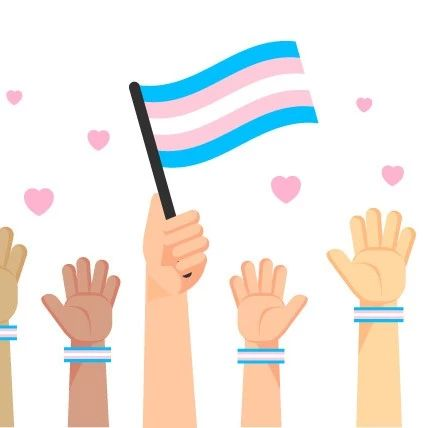

《跨儿心理咨询手册》介绍

跨儿心理小组于7月发布了“歧视知觉、内化跨性别嫌恶和社会支持影响跨儿心理健康”研究结果，于8月成功举办了“跨儿友善心理咨询进阶培训（第一期）”，我们根据研究结果和培训内容，编写了《跨儿心理咨询手册》，从今日起开始连载，敬请关注。

《跨儿心理咨询手册》
手册目录：
第1篇 | 跨儿知觉到的社会歧视
第2篇 | 跨儿产生的内化跨性别嫌恶
第3篇 | 跨儿的社会支持
第4篇 | 跨儿的心理健康状况
第5篇 | 跨儿心理健康的影响因素
第6篇 | 咨询师的性别探索与性别特权
第7篇 | 面向跨儿的肯定性咨询
第8篇 | 跨儿的性别认同历程
第9篇 | 咨询中的性别认同议题
第10篇 | 面向跨儿的出柜咨询
第11篇 | 面向跨儿的家庭治疗
第12篇 | 跨儿的亲密关系与出柜咨询

图文：欢喜
排版：健健
校对：四爺

原文公众号：